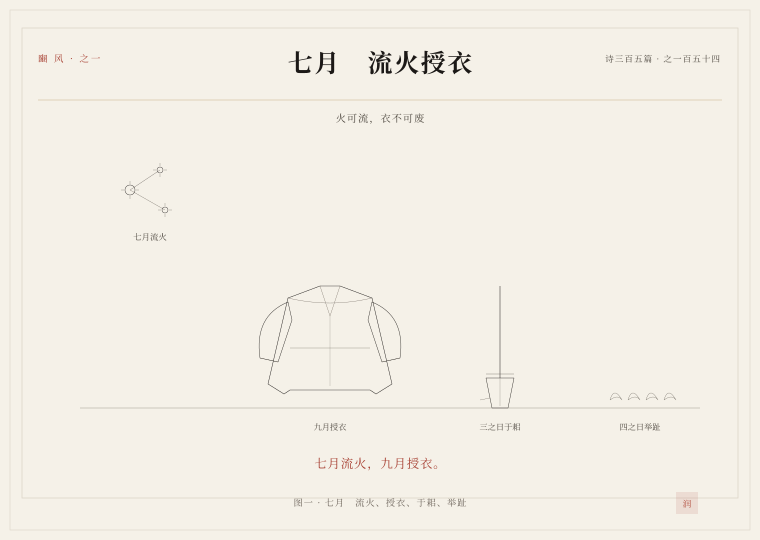
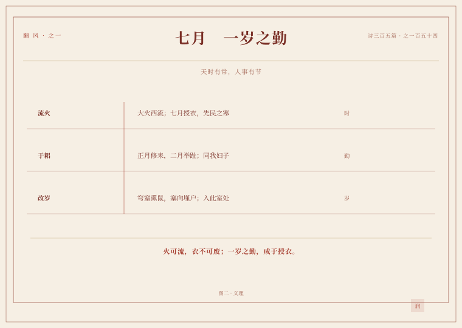

第一百五十四篇 七月
豳风 · 之一 SJ154
朗读 · 普通话
依经文原文朗读，章次不读出；配古琴底乐，不改速、不加拖腔。全库同一音色（豆包 TTS），非播音员录制。
一 解题
诗三判：
- 谁在说：周公。成王之时，周公遭流言，退居东都，追述后稷、公刘以来豳地先公风化，以「稼穑之艰难」告王。
- 说什么事：八章以月令为经、以衣食为纬：一章授衣、于耜，二章采桑、伤悲，三章蚕绩、为裳，四章猎裘、献豜，五章寒暑、入室，六章饮食、介寿，七章筑场、执宫功，八章凿冰、祭韭、称觥。一岁之政，尽在一诗。
- 为何编在此：豳风之首，也是《国风》最长一篇。以农事立王业，以天时立人事。
《毛序》：「《七月》，陈王业也。周公遭变故，陈后稷先公风化之所由，致王业之艰难也。」
朱子《诗集传》：「赋也。周公以成王未知稼穑之艰难，故陈后稷、公刘风化之所由，使瞽矇朝夕讽诵以教之。」又曰：「仰观星日霜露之变，俯察昆虫草木之化，以知天时，授民事。女服事乎内，男服事乎外，上以诚爱下，下以忠利上。」
本库的看法：《七月》是一首把「一年」写成一部政书的诗。
毛序说「陈王业」，朱子说「知天时、授民事」，二说一政一时，其实同指：天时有常，人事有节；衣不足则岁不能卒，食不足则民不能安。
须辨：七月是夏历七月，不是周正七月；流火是大火星西流，不是失火；一之日是周正十一月，二之日是十二月；「于耜」是修耒耜，不是犁田；「举趾」是举足下田；「女心伤悲」是为公子所采、将近归公，不是私奔；「公子」是豳公之子，不是泛称贵公子。诗不写一人之悲，写一岁之勤。
断语：火可流，衣不可废；一岁之勤，成于授衣。
先辨五事：「七月」用夏正，「一之日」用周正；「流火」是大火星西流；「于耜」是修农具；「举趾」是下田；「公子」是豳公之子。
二 经文
第一章
七月流火，九月授衣。
一之日觱发，二之日栗烈。
无衣无褐，何以卒岁。
三之日于耜，四之日举趾。
同我妇子，馌彼南亩，田畯至喜。
第二章
七月流火，九月授衣。
春日载阳，有鸣仓庚。
女执懿筐，遵彼微行，爰求柔桑。
春日迟迟，采蘩祁祁。
女心伤悲，殆及公子同归。
第三章
七月流火，八月萑苇。
蚕月条桑，取彼斧斨，以伐远扬，猗彼女桑。
七月鸣鵙，八月载绩。
载玄载黄，我朱孔阳，为公子裳。
第四章
四月秀葽，五月鸣蜩。
八月其获，十月陨萚。
一之日于貉，取彼狐狸，为公子裘。
二之日其同，载缵武功，言私其豵，献豜于公。
第五章
五月斯螽动股，六月莎鸡振羽。
七月在野，八月在宇，九月在户，十月蟋蟀，入我床下。
穹窒熏鼠，塞向墐户。
嗟我妇子，曰为改岁，入此室处。
第六章
六月食郁及薁，七月亨葵及菽。
八月剥枣，十月获稻。
为此春酒，以介眉寿。
七月食瓜，八月断壶，九月叔苴，采荼薪樗，食我农夫。
第七章
九月筑场圃，十月纳禾稼。
黍稷重穋，禾麻菽麦。
嗟我农夫！我稼既同，上入执宫功。
昼尔于茅，宵尔索绹。
亟其乘屋，其始播百谷。
第八章
二之日凿冰冲冲，三之日纳于凌阴。
四之日其蚤，献羔祭韭。
九月肃霜，十月涤场。
朋酒斯飨，曰杀羔羊。
跻彼公堂，称彼兕觥，万寿无疆！
三 韵读
- 一章：火、衣、发、烈、褐、岁、耜、趾、子、亩、喜，错综相叶。声长而杂，如一年之序。
- 二章：火、衣、阳、庚、筐、行、桑、迟、祁、悲、归，阳、脂交错。声转柔，女事之音。
- 三章：火、苇、桑、斨、扬、桑、鵙、绩、黄、阳、裳，阳部为主。声亮，蚕绩之音。
- 四章：葽、蜩、获、萚、貉、狸、裘、同、功、豵、公，入声与平声相间。声硬，田猎之音。
- 五章：股、羽、野、宇、户、下、鼠、户、子、岁、处，鱼、侯相叶。声促，寒暑之音。
- 六章：薁、菽、枣、稻、酒、寿、瓜、壶、苴、樗、夫，幽、侯相叶。声厚，饮食之音。
- 七章：圃、稼、穋、麦、夫、同、功、茅、绹、屋、谷，鱼、侯相叶。声实，农功之音。
- 八章：冲、阴、蚤、韭、霜、场、飨、羊、堂、觥、疆，阳、冬相叶。声开而长，收于祝。
读法：八章韵随事转，一章一音；读《七月》不可一调到底，须随月令换气。
四 字义与名物
- 流火：大火星西流。授衣：授冬衣。觱发：风寒。栗烈：寒气。褐：粗布衣。卒岁：终岁。于耜：修耒耜。举趾：举足下田。馌：送饭。南亩：向阳之田。田畯：农官。
- 载阳：开始暖和。仓庚：黄莺。懿筐：深筐。微行：小路。柔桑：嫩桑。迟迟：日长。蘩：白蒿。祁祁：众多。殆及：将与。公子：豳公之子。
- 萑苇：芦苇。蚕月：三月。条桑：析桑枝。斧斨：斧。远扬：远枝。猗：倚。女桑：柔桑。鵙：伯劳。载绩：开始织。玄、黄：黑、黄。朱：深红。孔阳：甚鲜明。
- 秀葽：葽草抽穗。蜩：蝉。陨萚：落叶。貉：猎貉。狐狸：狐与狸。裘：皮衣。缵：继续。武功：田猎之事。豵：一岁小猪。豜：三岁大猪。
- 斯螽：螽斯。动股：以股鸣。莎鸡：纺织娘。振羽：振翅鸣。穹窒：塞满空隙。熏鼠：熏鼠。塞向：塞北窗。墐户：涂门。改岁：过年。
- 郁、薁：郁李、野葡萄。亨：烹。葵、菽：葵菜、豆。剥：扑。春酒：冬酿春成。介：助。眉寿：长寿。断壶：摘葫芦。叔苴：拾麻子。荼：苦菜。樗：臭椿。食：养活。
- 场圃：打谷场与菜圃。纳禾稼：收谷入仓。重穋：先种后熟、后种先熟。同：聚。宫功：宫室之役。于茅：取茅。索绹：搓绳。亟：急。乘屋：上屋修葺。百谷：各种谷物。
- 冲冲：凿冰声。凌阴：冰窖。蚤：早。献羔祭韭：开冰之祭。肃霜：霜降。涤场：清扫场圃。朋酒：两壶酒。飨：乡饮。跻：登。公堂：豳公之堂。兕觥：犀角杯。无疆：无尽。
五 今译
一章：七月大火西流，九月授冬衣。十一月寒风觱发，十二月寒气栗烈。没有衣没有粗布，怎么过完这一年。正月修耒耜，二月举足下田。带着妻儿，送饭到南亩，农官看了欢喜。
二章：七月大火西流，九月授冬衣。春天开始暖和，黄莺鸣叫。女子提深筐，走小路，去求嫩桑。春日悠长，采白蒿的人众多。女子心里伤悲，将随豳公之子同归。
三章：七月大火西流，八月收芦苇。三月析桑枝，取斧斨，砍去远枝，倚取柔桑。七月伯劳鸣，八月开始织。染黑染黄，我的朱色甚鲜明，为公子做裳。
四章：四月葽草抽穗，五月蝉鸣。八月收获，十月落叶。十一月猎貉，取狐狸，为公子做裘。十二月会合，继续田猎，私留小猪，大猪献公。
五章：五月螽斯动股，六月莎鸡振羽。七月在野，八月在檐下，九月在门内，十月蟋蟀入我床下。塞空隙、熏鼠，塞北窗、涂门。叹我妇子，说是要过年了，住进这屋。
六章：六月吃郁李与野葡萄，七月烹葵与豆。八月扑枣，十月收稻。做春酒，助长寿。七月吃瓜，八月摘葫芦，九月拾麻子，采苦菜、砍臭椿，养活我农夫。
七章：九月筑场圃，十月收谷入仓。黍稷重穋，禾麻菽麦。叹我农夫！我的庄稼已聚，还要上入执宫室之役。白天取茅，夜里搓绳。急上屋修葺，又要开始播百谷。
八章：十二月凿冰冲冲，正月纳冰于窖。二月早行开冰，献羔祭韭。九月霜降，十月清扫场圃。两壶酒乡饮，杀羔羊。登公堂，举兕觥，祝万寿无疆。
六 章旨
- 一章：流火授衣，是「岁之始」；无衣无褐，是「岁之难」；于耜举趾，是「岁之勤」。一章立全年之骨。
- 二章：采桑采蘩，是「女事」；女心伤悲，是「归公」；春阳之下，已有身不由己。
- 三章：蚕绩为裳，是「女功」；朱色孔阳，是「为公子」；织物愈美，所奉愈上。
- 四章：田猎献豜，是「武功」；私豵献豜，是「上下之分」；猎场之中，已有公私之别。
- 五章：蟋蟀入床，是「寒暑之变」；穹窒墐户，是「御寒」；改岁入室，是「一岁之终」。
- 六章：果蔬酒食，是「养生」；食我农夫，是「劳者得食」；先公后私，先老后壮。
- 七章：筑场纳稼，是「农功之成」；执宫功、乘屋，是「农隙之役」；农事未毕，力役又起。
- 八章：凿冰祭韭，是「祭祀之始」；朋酒称觥，是「一岁之乐」；以劳始，以祝终。
七 诗教
- 知天时：流火、授衣、于耜、举趾，皆有月令；不知天时，则政无节。
- 知民事：无衣无褐，何以卒岁；诗不讳民之难，正欲君知民之难。
- 知上下：私豵献豜、为公子裳、为公子裘，上下有分；分不明，则劳者怨。
- 知终始：一岁以授衣始，以万寿祝终；始终有节，王业乃成。
八 分寸与边界
- 不把「七月」读成周正七月：七月用夏正；历法一错，全诗月令皆错。
- 不把「流火」读成失火：流火是大火星西流；读成火灾，则天时之义失。
- 不把「女心伤悲」读成私情：伤悲是为公子所采、将近归公；读成私奔，则诗之礼失。
- 不把「公子」读成泛称：公子是豳公之子；泛称则上下之分不见。
- 不把《七月》读成田园牧歌：诗写一年之勤，不写一年之乐；读成牧歌，则「无衣无褐」之痛失。
九 存疑
- 诗旨：毛序「陈王业」，朱子「知天时、授民事」。本库从毛朱，以农事政书为骨。
- 「一之日」：毛传「十有一月」，朱子「周正」。从周正。
- 「公子」：毛传「豳公之子」，一说女公子。从豳公之子。
- 「女心伤悲」：毛传「为公子裳」，郑笺「归公」。从将归公。
- 「重穋」：毛传「后熟曰重，先熟曰穋」。从毛传。
十 跨典
- 《尚书·无逸》「先知稼穑之艰难，乃逸」；此篇正为成王陈稼穑。
- 《礼记·月令》按月记政；此篇以诗记月，一诗即一部月令。
- 《孟子》「五亩之宅，树之以桑」；此篇「授衣」「采桑」「食瓜」，正是农政之目。
十一 双卡与图
六对：
| 七月（夏正七月） |
七月（周正七月） |
| 流火（大火西流） |
流火（失火） |
| 于耜（修农具） |
于耜（犁田） |
| 举趾（下田） |
举趾（举脚走路） |
| 公子（豳公之子） |
公子（泛称贵公子） |
| 女心伤悲（将归公） |
女心伤悲（私奔） |

图一 · 七月 流火授衣，于耜举趾

图二 · 七月 一岁之勤，成于授衣